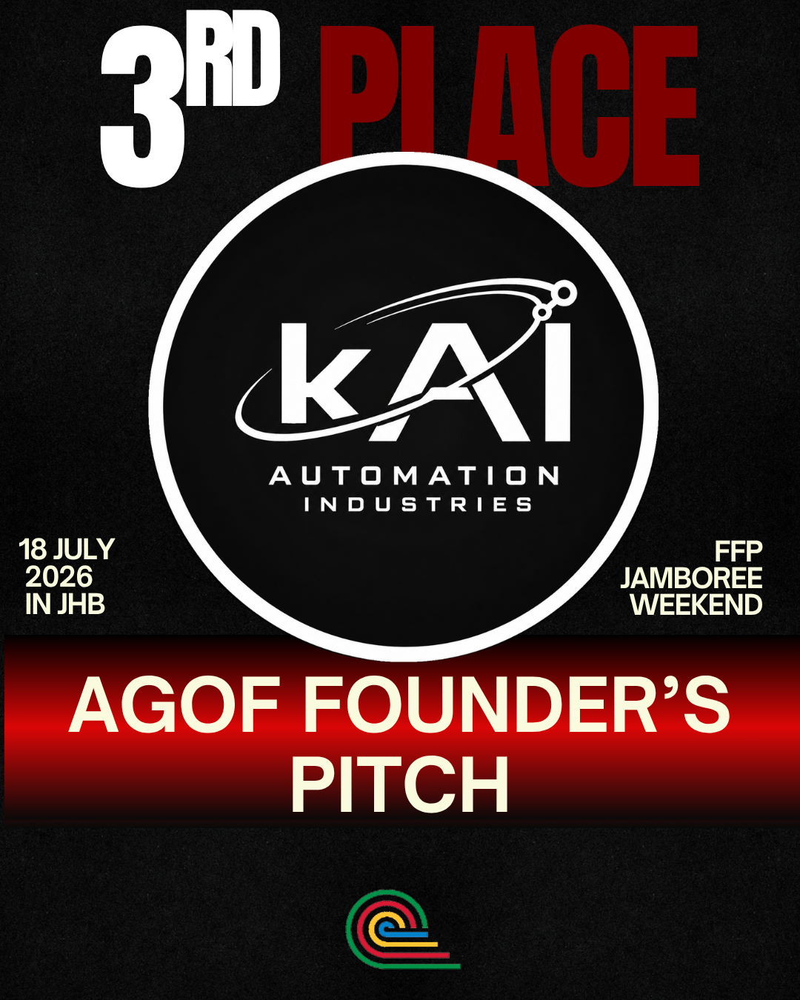
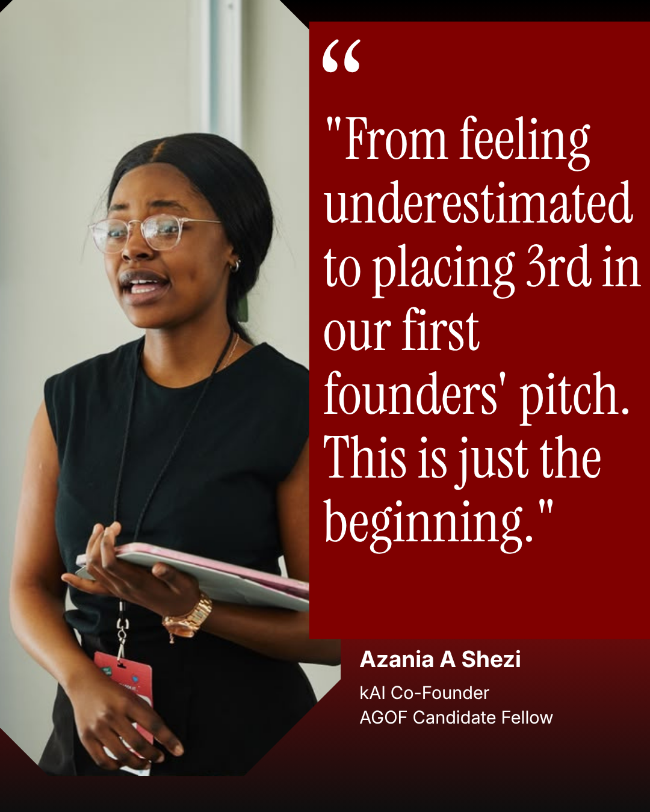

A student built company growing from a simple idea into practical automation for South African SMEs.
kAI Automation Industries was co founded by Joel T Munemo and Azania Shezi, two young entrepreneurs still at university, with a clear heart for SMEs from day one.
Our official launch, with a WhatsApp booking bot for Xclusive Barber in Durban.
Placed 3rd in the Allan Gray Orbis Foundation, and secured funding.
Telekoms Wireless, a Durban ICT and connectivity company, came next, followed by Damascus Coffee, a mobile coffee business, and others since.
We have begun developing our own chatbot stack to move beyond third party platforms, giving clients more control and reliability as we scale.
Moving into real estate, salons, and coaching, alongside our continued work in hospitality and education.

